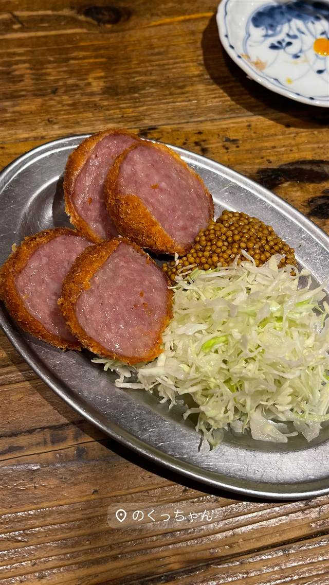

のくっちゃん
横浜串工房系「〇〇っちゃん」の一軒、塩の効いた串焼き
のくっちゃん
溝の口駅西口商店街にある立ち飲み居酒屋。串焼き居酒屋チェーンの横浜串工房が展開する「〇〇っちゃん」シリーズの一店で、2021年11月にオープン。塩の効いた串焼きや創作串、ハムカツなど気軽なつまみとお得なハッピーアワーが人気。
TRIVIA
豆知識
- 横浜串工房が手がける「つるっちゃん」「のげちゃん」などと同系列の「〇〇っちゃん」シリーズの一つ
- ハッピーアワーはドリンク250円均一でホッピーのお代わりは100円
REVIEWS
世間の評判
3.48食べログ
レバー刺しと立ち飲みの活気
- 名物のレバー刺しやレバーとろとろの味を絶品だと評価する声が多い
- セリや白レバーなど焼鳥や海鮮が安くて美味しいと評価する声が多い
- 人気店のため混雑時は行列ができ満席になりやすいという声もある
- 西口商店街の昭和レトロな雰囲気と店員の元気な接客を評価する声もある
食べログ 口コミ330件
| 創業 | 2021年11月開業 |
|---|---|
| 系譜 | 串焼き居酒屋チェーン「株式会社横浜串工房」が展開する「〇〇っちゃん」シリーズの一店。 |
| 看板 | 塩の効いた串焼き、白レバーのトリュフ塩がけなどの創作串、ハムカツ |
| こだわり | 串焼きの塩加減にこだわり、白レバーのトリュフ塩など創作系の串も提供。 |
| どこから | 23区の外れ・近郊 |
| 行くなら | 行列 |
| 予算 | 昼 ¥1,000～¥1,999 夜 ¥1,000～¥1,999 |
| 場所 | 溝の口駅 神奈川県川崎市高津区溝口2-7-13 |
| メモ | 溝の口駅西口商店街の立ち飲みスタイル。ハッピーアワー（〜18時、ハイボール等250円均一、ホッピーお代わり100円）あり。 |
食べたもの：ハムカツ